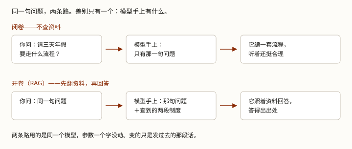

你把公司的年假制度问模型："请三天年假要走什么流程？"
它答得头头是道——可那套流程是你上个月才改的，它给的是老版本。
它怎么知道的？——它不知道。它在"接得像"。
学完这课，你能说清：模型为什么会"不知道"、RAG 到底做了什么、以及它一个字都没改模型是怎么回事。
RAG ＝ 让模型考一场开卷考试：回答之前，先从你的资料里查出相关的几段，塞进提示词，让它照着答。
它不改模型、不训练模型——书翻好了递给它，考生还是那个考生。
接着开头那句年假流程往下想。它答错，来路有三种。
这三种各有各的脸，挨个认清它们，以后看到模型答错，你能先判断它栽在哪一种上。
第一种：它没见过你的文档。训练它用的是公开语料，你的制度汇编、合同、会议纪要，一个字都不在里面。
你问"入职三年，我有几天年假"。答案就在年假制度那份文档里——公司共享盘上的一个 PDF，还是旧版 Word 格式。对模型来说，这份文档压根不存在。
它照样会给你一个数：五天、十天，编的。数字越具体，越像真的。你照着去请假，才发现跟制度里写的对不上——错的不是你，是那个凭空来的数。这是最常见的原因。
第二种：它有知识截止（knowledge cutoff）。训练完成之后才发生的事，它不知道。
上个月监管部门发了新口径，消息还在新闻里，你拿着新规去问它，它给你的却是旧口径。不是它装傻，是它的知识停在训练完成那一刻，那条新闻发生在这条线的右边。
这种翻车的答案通常是旧的，不是编的——答得越流畅，你越不会起疑，错的口径就一路带到你的结论里。
第三种：它学的是"接下一个字"，不是"查事实"。（LLM 底层 · 第 0 课）所以它不知道自己不知道。
你问一条它真没见过的规定，它不会说"我不知道"，而是把答案编下去："根据《考勤管理办法》第 8 条……"——条文号、措辞、语气都像模像样，唯独那份《考勤管理办法》第 8 条不存在。
你拿去跟法务对质，才发现出处是编的。这种编造有个通用名字，叫幻觉（hallucination）。
开头那套"老版本"就是第三种来路：不是它存着你的旧档案，是旧流程长得像标准答案，它顺着往下接，就接到了那里。
这个三分法是压缩过的，得说清是谁的分法：Pinecone 那篇指南把基础模型的局限列成五类——知识截止、领域知识浅、拿不到私有数据、答不出出处、概率性生成。这里把它们并成三张最常见的脸。剩下两类（答不出出处、领域浅），后面课里还会遇到。
三条短板都不是"模型不行"，是信息不在它手边。所以解法不是换更大的模型，而是把信息递过去：没见过的文档，放进资料库让它现查；没见过的新规，把那篇报道也放进去。资料在手边了，它就没必要编。
把主线那句话拆开，就是三件事：
你的问题
│
├─① 先去你的资料里查：哪几段跟这个问题有关？
│
├─② 把查到的那几段，跟问题一起发给模型
│
└─③ 模型照着资料回答提示词（prompt）就是你发给模型的那段话。RAG 做的事，说到底就是往这段话里加料。
这一步叫 RAG（检索增强生成，Retrieval-Augmented Generation）。名字正好拆成那三件事：检索是"翻书"，生成是"回答"，增强说的是它只在回答之前多拿了几段资料。
这不是课堂玩具：公司里那些"知识库问答"助手，背后大体走的就是这条路。
为什么加了料就管用？因为模型每接一个字，提示词里的全部内容都摆在它眼前。那几段资料不是让它背下来的，是摊在桌上的。它怎么"看"桌上的东西，是 LLM 底层 · 第 1 课 的事。
还有两件事，都是后面误会的源头。第一，那几段资料只在当次回答时在场：随这一次请求发过去，答完就没了，下一次提问要重新查、重新发——它不是把资料装进了模型。
第二，RAG 查的是你放进资料库的文档，不是互联网，跟"联网搜索"是两回事。
也别指望它替你把关资料的质量：资料库里放的是什么、干不干净，答案就跟着是什么。建库怎么建得干净，是「建库」那课的手艺。
比喻的对应就三句：考场＝你的一次提问，书＝你的资料库，翻到的那几页＝塞进提示词的那几段。
哪里不稳？开卷考试里书总归是有的；RAG 里你的资料可能根本没这段——翻了也白翻，模型手上还是只有一句问题，该怎么编它还怎么编。
而且书得自己准备：把公司文档整理成能翻的样子，也是后面几课的事。资料缺了段落这种新翻车，第 9 课摆开讲。
模型本身一个字没变。它的参数（权重），也就是训练时定下来的那套数，从头到尾没被动过。也没有重新训练。
变的只有你发过去的那段话，多了几段资料。
RAG 这个名字的出处论文把这点说得很直白：换掉那份资料索引，就能更新模型的知识，不用重新训练。落到你工作里就是：制度改了，把资料库里的那份文档换成新的，下一次提问答案跟着变，不用求着谁把模型再训练一遍。

那为什么不干脆换个更大的模型，或者拿训练把制度塞进它脑子里？
那些是另外的路，价钱各不相同。第 3 课把几条路摆在一起对表。
上面第①步"查哪几段有关"，靠的是把文字变成数字再比。这个动作叫嵌入（embedding）——但你已经在别的课里见过这个词，而且是另一个东西：
| 词嵌入 | 文本嵌入 | |
|---|---|---|
| 压什么 | 一个 token → 一根向量 | 一整段文字 → 一根向量 |
| 谁算的 | 语言模型的第一层（查表） | 另一个小模型，专门干这个 |
| 拿来干嘛 | 喂给模型当输入 | 只用来排序，挑出该给哪几段 |
| 在哪讲的 | LLM 底层 · 第 1 课 | 这一课 |
（两条都叫 embedding，很容易混。术语表里有 词嵌入 和 文本嵌入 两条，分开写的。）
一条 RAG 链上其实跑着两个模型——一个只管把文字变成向量、给段落排序，一个只管答题。它们各干各的，互不相干。
脚本在工作区：exercises/rag/0001-why-retrieval.py。它不调任何模型，只演一件事——不检索 vs 检索之后，模型手上有什么。
python exercises/rag/0001-why-retrieval.pyWindows 终端若中文乱码，先执行 chcp 65001。下面是输出摘录（跑了就有完整的）。
[3] 不检索时，模型手上有什么
——只有那一句问题。资料一个字都没有。
——它学的是「接得像」（见 LLM 底层第 0 课），于是会编一套听起来合理的流程。
——注意：它不会说「我不知道」。它不知道自己不知道。
[4] 检索：把每段压成一根向量，跟问题比相似度（点积）
相似度 = 2 段 2．请假三天以内（含三天），向直属主管口头报备即可，事后补一条消息。
相似度 = 1 段 3．请假三天以上，需在系统里提交申请单，附上证明材料，主管审批后生效。
相似度 = 1 段 4．报销流程：每月 25 日前提交发票，财务在次月 15 日统一打款。
相似度 = 0 段 1．年假天数：入职满一年者每年 5 天，满三年者 10 天，满五年者 15 天。
相似度 = 0 段 5．加班调休：加班满 4 小时可调休半天，调休需当月用完，过期作废。
[5] 检索之后，模型手上有什么
【资料 1】（原第 2 段）请假三天以内（含三天），向直属主管口头报备即可…
【资料 2】（原第 3 段）请假三天以上，需在系统里提交申请单，附上证明材料…
【问题】请三天假要走什么流程？先看懂两件事：
另外两件顺带的事：
脚本里的段落是按相似度挑的，真实系统挑段落的花样更多——从第 2 课起逐个拆。
到这里，"先查资料再回答"这条路走通了一遍：三个短板说明了为什么必须递资料，开卷考试说明了怎么递，脚本让你亲眼看见递过去前后、模型手上差了什么。
你在 API 里发的那段提示词，形状就是【资料】＋【问题】这样拼起来的。还剩一个问题——这一整条链，从文档到答案，到底长什么样？
Q1 不给模型任何资料，它答不出你的内部流程时，通常会怎么做？
Q2 RAG 到底改了模型的什么？
Q3 「它不知道自己不知道」，为什么是关键？
Q4 你问模型"上个月刚发布的新规怎么算"，它答错最可能因为什么？
Q5 拿公司内网的报销制度去问模型，答错了，第一嫌疑是什么？
Q6 下面哪件事，用的是「文本嵌入」？
顺着往下：RAG · 第 2 课 · 一条 RAG 链长什么样
换个角度：LLM 底层 · 第 0 课 · 模型是怎么学出来的 · Agent 原理篇 · 第 1 课
术语表：文本嵌入 · 词嵌入 · 幻觉 · 知识截止